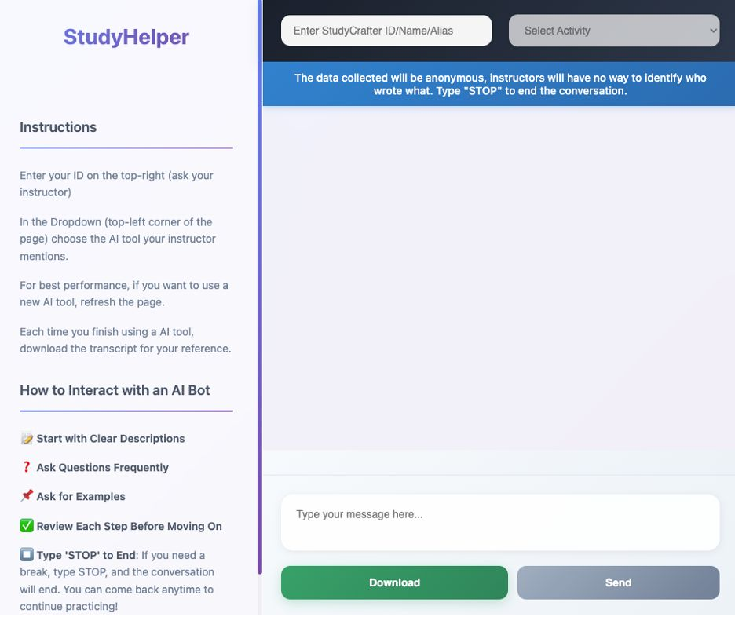

The Research Question
Can AI-supported learning tools improve students' perceived competence and learning in experimental research design and statistical reasoning?
Context
Students and instructors interacted with AI-supported learning tools designed to support research methods instruction. The project used feedback from both groups to identify problems, improve the learning experience, and refine the tools across multiple implementations.
The research examined both students' perceptions of their competence and their objective knowledge, while also using feedback and interaction data to guide improvements to the tools and activities.
Study Design
Workshops and AI-supported activities were developed in collaboration with instructors and refined through feedback from instructors and students across multiple implementations.
Student interactions, reflections, feedback, and learning outcomes were used alongside pre- and post-intervention measures to evaluate the experience and inform subsequent versions of the tools and activities.
My Role
- Co-designed AI-supported learning activities with instructors and research collaborators.
- Coordinated and mentored student researchers supporting data collection, analysis, and workshop development.
- Gathered feedback from instructors and students to identify opportunities for improvement.
- Developed and refined AI-supported tools and workshop activities across multiple implementations.
- Collected and analyzed qualitative feedback, interaction data, and learning outcomes.
- Used research findings to inform changes to the tools, activities, and learning experience.

StudyHelper interface used during AI-supported research methods activities.
Co-Design & Iterative Evaluation
The AI-supported tools and workshop activities were developed and refined through collaboration with instructors and feedback from students. Each implementation provided opportunities to identify problems, understand how users interacted with the tools, and improve subsequent versions.
Feedback, student reflections, interaction transcripts, and learning outcomes were considered together to guide changes to the activities and chatbot design.
Research Methods & Analysis
Qualitative
- Instructor and student feedback
- Focus groups and reflections
- AI interaction transcripts
- Thematic analysis
Quantitative
- Pre/post measures
- Behavioral and interaction data
- Learning outcomes
- Statistical analysis
Key Findings
The research also showed the value of combining behavioral data, user feedback, and performance measures to understand how students interacted with the AI-supported activities and where the experience could be improved.
Why It Matters
Combining user feedback, behavioral data, and performance measures helped identify how students interacted with the AI tools and where the experience could be improved.
Working directly with instructors and students allowed the tools and activities to be refined based on evidence rather than assumptions, creating a more user-centered development process.